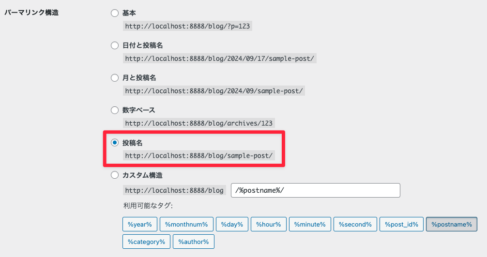
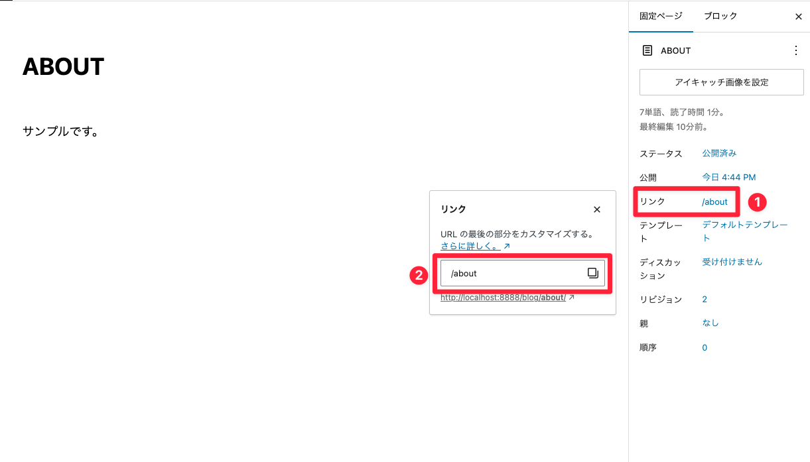

1. 固定ページの追加
WordPressの記事形式には「投稿」と「固定ページ」の2種類がある。
- 「投稿」：日々更新され、記事一覧ページなどで時系列に表示される。
- 「固定ページ」：「ABOUT（自己紹介）」「CONTACT（お問い合わせ）」のように時系列に左右されず、常にそこに固定される。
※動的に増えたり減ったりはしないが、固定ページにすることで「管理画面」から内容を編集できるようになる。
1-1. 「page.php」を作成する
- 「single.php」を複製し、ファイル名を「page.php」に変更する。
- WordPressループの中身を「the_content()」のみにし、ページ送りなどの余分なものを削除する。
# 「page.php」を編集 <?php if( have_posts() ): ?> <?php while( have_posts() ): the_post(); ?> <?php the_content(); ?> <?php endwhile; ?> <?php endif ?>
- 【表示を確認する】
-
- 『管理画面メニュー > 固定ページ > 固定ページ一覧』を選択。
- 「サンプルページ」の列にマウスオーバーで表示される「クイックメニュー」から「表示」をクリック。
1-2. パーマリンクの設定
「http://localhost:8888/blog/?page_id=◯」の形だと管理しずらいため、「http://localhost:8888/blog/about/」になるように設定を変更する。
- 【手順】
-
- 『管理画面メニュー > 設定 > パーマリンク』を選択。
- 「投稿名」にチェックを入れ、「変更を保存」をクリック。

1-3. ABOUTページの作成
- 『管理画面メニュー > 固定ページ > 新規追加』を選択
- タイトルに「ABOUT」、本文に任意の文章を入力し、パーマリンクの項目から「URLスラッグ」に「about」と入力

- 「公開」をクリックする。
- スラッグが重複した場合は、すでに存在している固定ページを「ゴミ箱に移動」する。
- サイトの表示を確認する。
固定ページを追加したら管理画面から内容を入力していくが、複雑なデザインの場合は難しい。
その場合は、より優先度の高いファイルを固定ページごとに用意する。
1-4. 「page-about.php」を作成する
- 「about.html」のファイル名を「page-about.php」に変更
- ABOUTページを表示してみる
- 適切な場所に「get_header()」「get_footer()」を設定する
- 画像がある場合は、パスを修正する
- 【グローバルメニューの修正】
-
<a href="<?php echo home_url('/about/'); ?>">ABOUT</a>
1-5. 「page-contact.php」を作成する
ABOUTページを参考に。